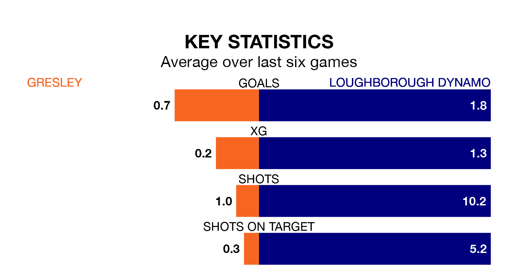

Relegation candidates Gresley face a challenge against high-flying Loughborough Dynamo at the Moat Ground on Saturday.
Gresley are 19th in the Northern Premier League Division One – Midlands table, and have picked up four wins and six draws in their 27 games to date.
Loughborough Dynamo, meanwhile, are fourth in the standings with 50 points, having won 15 and drawn five of their first 25 matches, and are eight points behind table-toppers Spalding United.
With 27 goals in 27 games so far this season, Gresley are scoring at below the league average rate with 1.0 goals per game. And they are conceding more than average, letting in 71 goals at a rate of 2.6 per game.
Loughborough Dynamo, meanwhile, are above average scorers, with 1.8 goals per game, compared to a league average of 1.5. They have conceded 1.3 goals per game.
The hosts are in bad form in the Northern Premier League Division One Midlands, with one win and five losses from their last six games.
With four wins and two losses over that period, the away team's form is much better – they have taken 12 points from 18, compared to Gresley's three.
In the last three years, Gresley and Loughborough Dynamo have played each other on three occasions. Loughborough Dynamo won two of them and they drew once.
Their last meeting was on October 28, when Loughborough Dynamo won 4-2 at home.
Gresley's last match was on February 3, a 4-0 loss against Spalding United.
Loughborough Dynamo beat Walsall Wood 2-1 last time out, also on February 3, with on the scoresheet.
Updated: 11:43 (UTC), 08/02/24